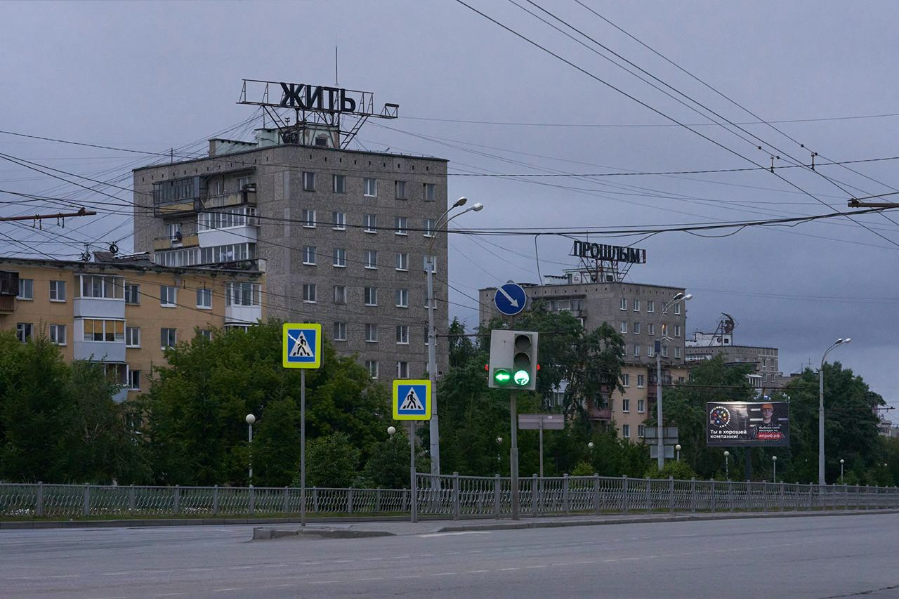

Про российский спорт
Открытием последнего времени стал Витя Кравченко с видео про Касаткину и Рублева и Легкую атлетику.
Крайне рекомендую к просмотру.
Открытием последнего времени стал Витя Кравченко с видео про Касаткину и Рублева и Легкую атлетику.
Крайне рекомендую к просмотру.

Тогда мне казалось, что “жить прошлым” — это точный диагноз. Сегодня я думаю, что это приговор. — Тимофей Радя
Сын (3 года) просит купить арбуз:
— Леш, давай купим арбуз?
— Не хочу
— Почему?
— Ну, а вдруг он будет невкусным?
Захар:
— А вдруг он будет вкусным?
Ахах.
Купили.
Вкусный.
Alexander Ermochenko / Reuters / Scanpix / LETA
Совершенно офигительное и подробное описание устройства наручных механических часов (eng).
Whatever you do will be insignificant, but it is very important that you do it. — Mahatma Gandhi
via reminder.media

Очень приятное кино!

Классное японское кино по рассказу Харуки Мурками.